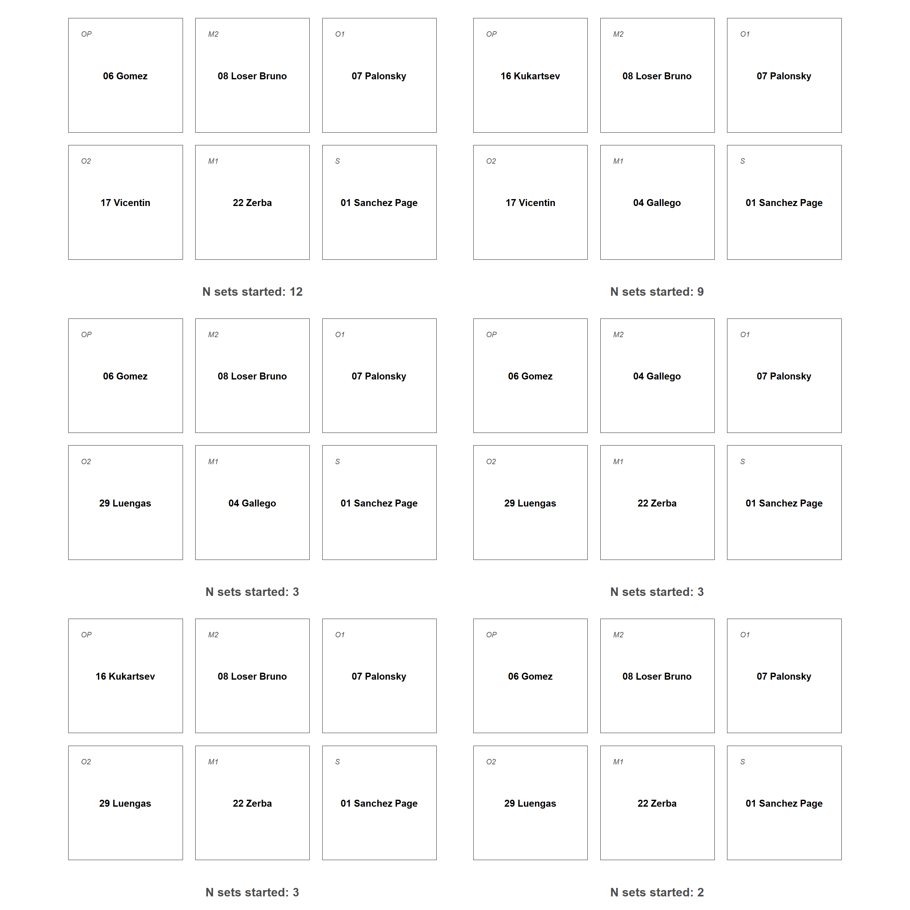

Chapter 3 Estudo de rotação
3.1 Geral
3.1.1 Sacando
| Team | Start | ROT | Sets |
|---|---|---|---|
| ITA25 | Serve | 6 | 12 |
| ITA25 | Serve | 1 | 6 |
| ITA25 | Serve | 2 | 2 |
| ITA25 | Serve | 3 | 1 |
| ITA25 | Serve | 4 | 1 |
3.1.2 Recebendo
| Team | Start | ROT | Sets |
|---|---|---|---|
| ITA25 | Reception | 2 | 10 |
| ITA25 | Reception | 1 | 6 |
| ITA25 | Reception | 6 | 5 |
| ITA25 | Reception | 3 | 1 |
3.1.3 First set
| Team | Start | ROT | Sets |
|---|---|---|---|
| ITA25 | Serve | 6 | 12 |
| ITA25 | Serve | 1 | 6 |
| ITA25 | Serve | 2 | 2 |
| ITA25 | Serve | 3 | 1 |
| ITA25 | Serve | 4 | 1 |
| Team | Start | ROT | Sets |
|---|---|---|---|
| ITA25 | Reception | 2 | 10 |
| ITA25 | Reception | 1 | 6 |
| ITA25 | Reception | 6 | 5 |
| ITA25 | Reception | 3 | 1 |
3.2 Line-up
Player names are restricted to first 14 letters to fit on tables.
3.2.1 General

| SETTER | OUTSIDE 1 | OUTSIDE 2 | MIDDLE 1 | MIDDLE 2 | OPPOSITE | TOTAL |
|---|---|---|---|---|---|---|
| 06 Giannelli | 31 Porro L. | 09 Sani | 25 Gargiulo | 17 Anzani | 16 Roman? | 6 |
| 06 Giannelli | 05 Michieletto | 15 Lavia | 14 Galassi | 25 Gargiulo | 16 Roman? | 3 |
| 06 Giannelli | 12 Bottolo | 09 Sani | 25 Gargiulo | 17 Anzani | 11 Rychlicki | 3 |
| 06 Giannelli | 12 Bottolo | 31 Porro L. | 25 Gargiulo | 17 Anzani | 16 Roman? | 3 |
| 26 Boninfante | 12 Bottolo | 31 Porro L. | 25 Gargiulo | 17 Anzani | 11 Rychlicki | 3 |
| 06 Giannelli | 05 Michieletto | 12 Bottolo | 14 Galassi | 25 Gargiulo | 11 Rychlicki | 2 |
| 06 Giannelli | 05 Michieletto | 15 Lavia | 14 Galassi | 13 Cortesia | 11 Rychlicki | 2 |
| 06 Giannelli | 05 Michieletto | 15 Lavia | 25 Gargiulo | 14 Galassi | 16 Roman? | 2 |
| 06 Giannelli | 12 Bottolo | 31 Porro L. | 25 Gargiulo | 17 Anzani | 11 Rychlicki | 2 |
| 08 Sbertoli | 05 Michieletto | 15 Lavia | 18 Sanguinetti | 14 Galassi | 11 Rychlicki | 2 |
| 08 Sbertoli | 31 Porro L. | 12 Bottolo | 25 Gargiulo | 18 Sanguinetti | 16 Roman? | 2 |
| 26 Boninfante | 12 Bottolo | 09 Sani | 17 Anzani | 13 Cortesia | 16 Roman? | 2 |
| 26 Boninfante | 12 Bottolo | 09 Sani | 17 Anzani | 18 Sanguinetti | 16 Roman? | 2 |
| 26 Boninfante | 12 Bottolo | 31 Porro L. | 18 Sanguinetti | 17 Anzani | 16 Roman? | 2 |
| 06 Giannelli | 05 Michieletto | 15 Lavia | 18 Sanguinetti | 14 Galassi | 11 Rychlicki | 1 |
| 06 Giannelli | 12 Bottolo | 09 Sani | 25 Gargiulo | 18 Sanguinetti | 11 Rychlicki | 1 |
| 06 Giannelli | 31 Porro L. | 09 Sani | 25 Gargiulo | 17 Anzani | 11 Rychlicki | 1 |
| 08 Sbertoli | 05 Michieletto | 31 Porro L. | 18 Sanguinetti | 14 Galassi | 16 Roman? | 1 |
| 08 Sbertoli | 12 Bottolo | 31 Porro L. | 14 Galassi | 18 Sanguinetti | 11 Rychlicki | 1 |
| 08 Sbertoli | 12 Bottolo | 31 Porro L. | 18 Sanguinetti | 13 Cortesia | 11 Rychlicki | 1 |
| 08 Sbertoli | 15 Lavia | 12 Bottolo | 25 Gargiulo | 14 Galassi | 16 Roman? | 1 |
| 26 Boninfante | 03 Recine | 21 Gardini | 13 Cortesia | 27 Caneschi | 23 Bovolenta | 1 |
3.2.2 Roles
| player_name | setter | opp | oh2 | oh3 | mb2 | mb3 |
|---|---|---|---|---|---|---|
| 06 Giannelli | 26 | . | . | . | . | . |
| 08 Sbertoli | 8 | . | . | . | . | . |
| 26 Boninfante | 10 | . | . | . | . | . |
| 11 Rychlicki | . | 19 | . | . | . | . |
| 16 Roman? | . | 24 | . | . | . | . |
| 23 Bovolenta | . | 1 | . | . | . | . |
| 03 Recine | . | . | 1 | . | . | . |
| 05 Michieletto | . | . | 13 | . | . | . |
| 12 Bottolo | . | . | 20 | 5 | . | . |
| 15 Lavia | . | . | 1 | 10 | . | . |
| 31 Porro L. | . | . | 9 | 13 | . | . |
| 09 Sani | . | . | . | 15 | . | . |
| 21 Gardini | . | . | . | 1 | . | . |
| 13 Cortesia | . | . | . | . | 1 | 5 |
| 14 Galassi | . | . | . | . | 8 | 7 |
| 17 Anzani | . | . | . | . | 4 | 20 |
| 18 Sanguinetti | . | . | . | . | 7 | 6 |
| 25 Gargiulo | . | . | . | . | 24 | 5 |
| 27 Caneschi | . | . | . | . | . | 1 |
3.2.3 First set
| SETTER | OUTSIDE 1 | OUTSIDE 2 | MIDDLE 1 | MIDDLE 2 | OPPOSITE | TOTAL |
|---|---|---|---|---|---|---|
| 06 Giannelli | 05 Michieletto | 15 Lavia | 14 Galassi | 13 Cortesia | 11 Rychlicki | 1 |
| 06 Giannelli | 05 Michieletto | 15 Lavia | 14 Galassi | 25 Gargiulo | 16 Roman? | 1 |
| 06 Giannelli | 05 Michieletto | 15 Lavia | 18 Sanguinetti | 14 Galassi | 11 Rychlicki | 1 |
| 06 Giannelli | 05 Michieletto | 15 Lavia | 25 Gargiulo | 14 Galassi | 16 Roman? | 1 |
| 06 Giannelli | 12 Bottolo | 09 Sani | 25 Gargiulo | 17 Anzani | 11 Rychlicki | 1 |
| 06 Giannelli | 12 Bottolo | 31 Porro L. | 25 Gargiulo | 17 Anzani | 16 Roman? | 1 |
| 06 Giannelli | 31 Porro L. | 09 Sani | 25 Gargiulo | 17 Anzani | 16 Roman? | 1 |
| 26 Boninfante | 12 Bottolo | 09 Sani | 17 Anzani | 13 Cortesia | 16 Roman? | 1 |
| 26 Boninfante | 12 Bottolo | 31 Porro L. | 18 Sanguinetti | 17 Anzani | 16 Roman? | 1 |
| 26 Boninfante | 12 Bottolo | 31 Porro L. | 25 Gargiulo | 17 Anzani | 11 Rychlicki | 1 |
3.2.4 First Set by Match
| MATCH | SETTER | OUT HITTER 1 | OUT HITTER 2 | MIDDLE 1 | MIDDLE 2 | OPPOSITE | TOTAL |
|---|---|---|---|---|---|---|---|
| 2025-05-30 AMNA ITA 2-3 IRI | 26 Boninfante | 12 Bottolo | 09 Sani | 17 Anzani | 13 Cortesia | 16 Roman? | 1 |
| 2025-05-31 AMNA ITA 3-1 IRI | 26 Boninfante | 12 Bottolo | 31 Porro L. | 25 Gargiulo | 17 Anzani | 11 Rychlicki | 1 |
| 2025-06-11 .4 BUL 1-3 ITA | 06 Giannelli | 12 Bottolo | 09 Sani | 25 Gargiulo | 17 Anzani | 11 Rychlicki | 1 |
| 2025-06-13 .20 FRA 3-1 ITA | 06 Giannelli | 31 Porro L. | 09 Sani | 25 Gargiulo | 17 Anzani | 16 Roman? | 1 |
| 2025-06-14 .12 GER 2-3 ITA | 26 Boninfante | 12 Bottolo | 31 Porro L. | 18 Sanguinetti | 17 Anzani | 16 Roman? | 1 |
| 2025-06-15 .32 ARG 1-3 ITA | 06 Giannelli | 12 Bottolo | 31 Porro L. | 25 Gargiulo | 17 Anzani | 16 Roman? | 1 |
| 2025-06-20 AMNA CAN 1-4 ITA | 06 Giannelli | 05 Michieletto | 15 Lavia | 25 Gargiulo | 14 Galassi | 16 Roman? | 1 |
| 2025-06-21 AMNA CAN 2-3 ITA | 06 Giannelli | 05 Michieletto | 15 Lavia | 14 Galassi | 13 Cortesia | 11 Rychlicki | 1 |
| 2025-06-25 .42 ITA 3-2 POL | 06 Giannelli | 05 Michieletto | 15 Lavia | 14 Galassi | 25 Gargiulo | 16 Roman? | 1 |
| 2025-06-27 .56 CHN 0-3 ITA | 06 Giannelli | 05 Michieletto | 15 Lavia | 18 Sanguinetti | 14 Galassi | 11 Rychlicki | 1 |
3.2.5 Lineup by Match (5 last)
| MATCH/SET | SETTER | OUT HITTER 1 | OUT HITTER 2 | MIDDLE 1 | MIDDLE 2 | OPPOSITE | TOTAL |
|---|---|---|---|---|---|---|---|
| 2025-06-11 .4 BUL 1-3 ITA S1 | 144005 | 163447 | 174807 | 163030 | 124865 | 158881 | 1 |
| 2025-06-11 .4 BUL 1-3 ITA S2 | 144005 | 163447 | 174807 | 163030 | 124865 | 158881 | 1 |
| 2025-06-11 .4 BUL 1-3 ITA S3 | 144005 | 163447 | 174807 | 163030 | 124865 | 158881 | 1 |
| 2025-06-11 .4 BUL 1-3 ITA S4 | 144005 | 163447 | 182292 | 163030 | 124865 | 162520 | 1 |
| 2025-06-13 .20 FRA 3-1 ITA S1 | 144005 | 182292 | 174807 | 163030 | 124865 | 162520 | 1 |
| 2025-06-13 .20 FRA 3-1 ITA S2 | 144005 | 182292 | 174807 | 163030 | 124865 | 158881 | 1 |
| 2025-06-13 .20 FRA 3-1 ITA S3 | 144005 | 182292 | 174807 | 163030 | 124865 | 162520 | 1 |
| 2025-06-13 .20 FRA 3-1 ITA S4 | 144005 | 182292 | 174807 | 163030 | 124865 | 162520 | 1 |
| 2025-06-14 .12 GER 2-3 ITA S1 | 182436 | 163447 | 182292 | 174076 | 124865 | 162520 | 1 |
| 2025-06-14 .12 GER 2-3 ITA S2 | 182436 | 163447 | 182292 | 174076 | 124865 | 162520 | 1 |
| 2025-06-14 .12 GER 2-3 ITA S3 | 144005 | 182292 | 174807 | 163030 | 124865 | 162520 | 1 |
| 2025-06-14 .12 GER 2-3 ITA S4 | 144005 | 182292 | 174807 | 163030 | 124865 | 162520 | 1 |
| 2025-06-14 .12 GER 2-3 ITA S5 | 144005 | 182292 | 174807 | 163030 | 124865 | 162520 | 1 |
| 2025-06-15 .32 ARG 1-3 ITA S1 | 144005 | 163447 | 182292 | 163030 | 124865 | 162520 | 1 |
| 2025-06-15 .32 ARG 1-3 ITA S2 | 144005 | 163447 | 182292 | 163030 | 124865 | 162520 | 1 |
| 2025-06-15 .32 ARG 1-3 ITA S3 | 144005 | 163447 | 182292 | 163030 | 124865 | 158881 | 1 |
| 2025-06-15 .32 ARG 1-3 ITA S4 | 144005 | 163447 | 182292 | 163030 | 124865 | 158881 | 1 |
| 2025-06-20 AMNA CAN 1-4 ITA S1 | 144005 | 171191 | 153200 | 163030 | 152408 | 162520 | 1 |
| 2025-06-20 AMNA CAN 1-4 ITA S2 | 144005 | 171191 | 153200 | 163030 | 152408 | 162520 | 1 |
| 2025-06-20 AMNA CAN 1-4 ITA S3 | 152370 | 171191 | 182292 | 174076 | 152408 | 162520 | 1 |
| 2025-06-20 AMNA CAN 1-4 ITA S4 | 152370 | 163447 | 182292 | 152408 | 174076 | 158881 | 1 |
| 2025-06-20 AMNA CAN 1-4 ITA S5 | 152370 | 163447 | 182292 | 174076 | 163028 | 158881 | 1 |
| 2025-06-21 AMNA CAN 2-3 ITA S1 | 144005 | 171191 | 153200 | 152408 | 163028 | 158881 | 1 |
| 2025-06-21 AMNA CAN 2-3 ITA S2 | 144005 | 171191 | 153200 | 152408 | 163028 | 158881 | 1 |
| 2025-06-21 AMNA CAN 2-3 ITA S3 | 152370 | 153200 | 163447 | 163030 | 152408 | 162520 | 1 |
| 2025-06-21 AMNA CAN 2-3 ITA S4 | 152370 | 182292 | 163447 | 163030 | 174076 | 162520 | 1 |
| 2025-06-21 AMNA CAN 2-3 ITA S5 | 152370 | 182292 | 163447 | 163030 | 174076 | 162520 | 1 |
| 2025-06-25 .42 ITA 3-2 POL S1 | 144005 | 171191 | 153200 | 152408 | 163030 | 162520 | 1 |
| 2025-06-25 .42 ITA 3-2 POL S2 | 144005 | 171191 | 153200 | 152408 | 163030 | 162520 | 1 |
| 2025-06-25 .42 ITA 3-2 POL S3 | 144005 | 171191 | 153200 | 152408 | 163030 | 162520 | 1 |
| 2025-06-25 .42 ITA 3-2 POL S4 | 144005 | 171191 | 163447 | 152408 | 163030 | 158881 | 1 |
| 2025-06-25 .42 ITA 3-2 POL S5 | 144005 | 171191 | 163447 | 152408 | 163030 | 158881 | 1 |
| 2025-06-27 .56 CHN 0-3 ITA S1 | 144005 | 171191 | 153200 | 174076 | 152408 | 158881 | 1 |
| 2025-06-27 .56 CHN 0-3 ITA S2 | 152370 | 171191 | 153200 | 174076 | 152408 | 158881 | 1 |
| 2025-06-27 .56 CHN 0-3 ITA S3 | 152370 | 171191 | 153200 | 174076 | 152408 | 158881 | 1 |
3.2.7 Fase de BP
| ROT | TOT | EFF | ERR% | ERR | PT+XQ | #/+% | %BP TT | %BP VG | %BP FLHB | B_SUM | B_POS |
|---|---|---|---|---|---|---|---|---|---|---|---|
| 1 | NA | 5.2 | 17.9 | 31 | 14 | 7.0 | 34.1 | 33.6 | 37.5 | NA | NA |
| 6 | NA | 2.8 | 26.7 | 48 | 23 | 9.0 | 30.0 | 30.3 | 0.0 | NA | NA |
| 5 | NA | 0.0 | 15.3 | 27 | 10 | 4.5 | 29.4 | 27.4 | 30.8 | NA | NA |
| 4 | NA | 5.7 | 22.9 | 40 | 18 | 8.8 | 36.0 | 36.0 | NaN | NA | NA |
| 3 | NA | -2.5 | 26.2 | 42 | 19 | 7.4 | 32.5 | 32.7 | 30.0 | NA | NA |
| 2 | NA | 7.3 | 12.6 | 19 | 7 | 5.8 | 35.8 | 22.9 | 39.7 | NA | NA |
| NA | NA | NaN | NaN | 0 | 0 | 0.0 | NaN | NaN | NaN | NA | NA |